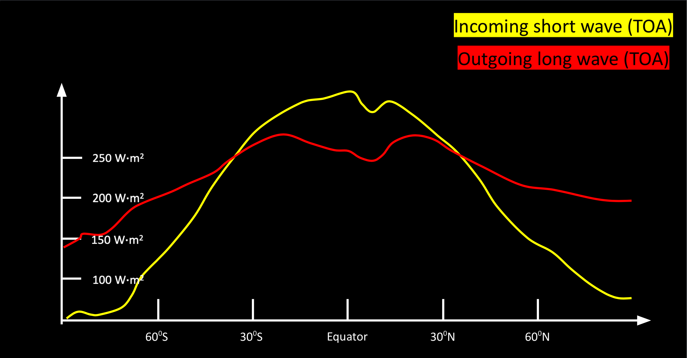
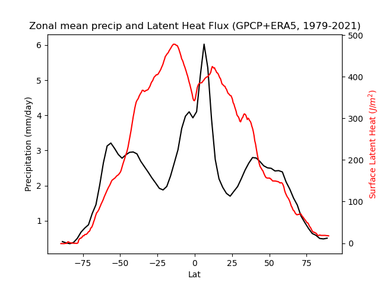
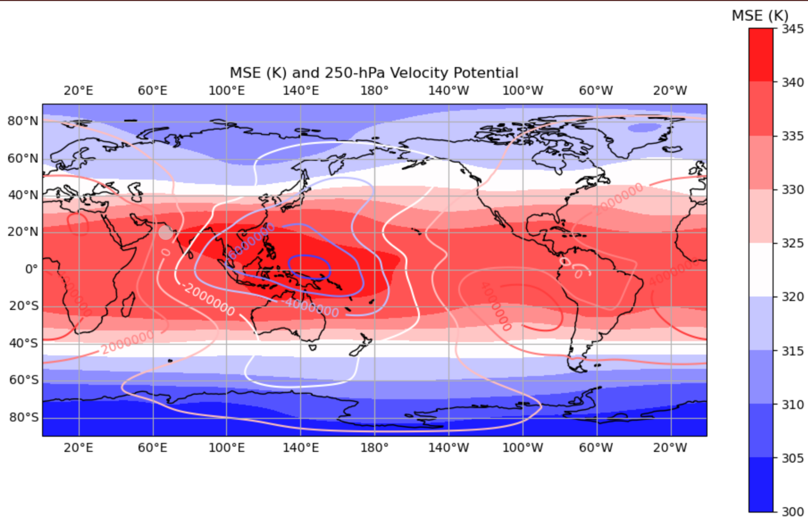
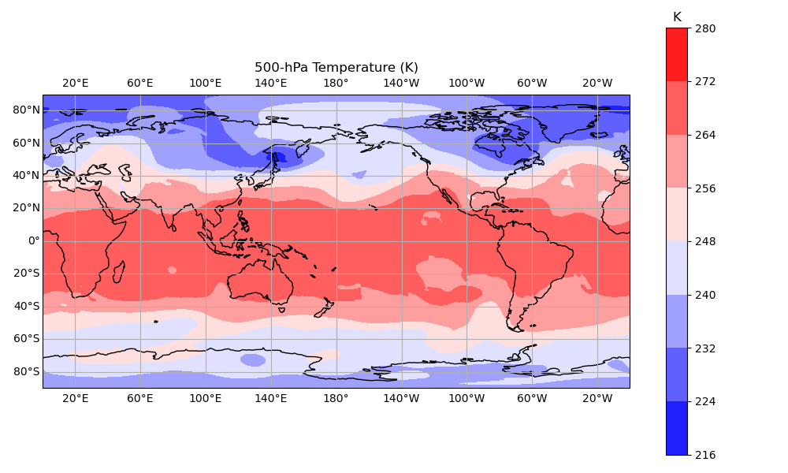
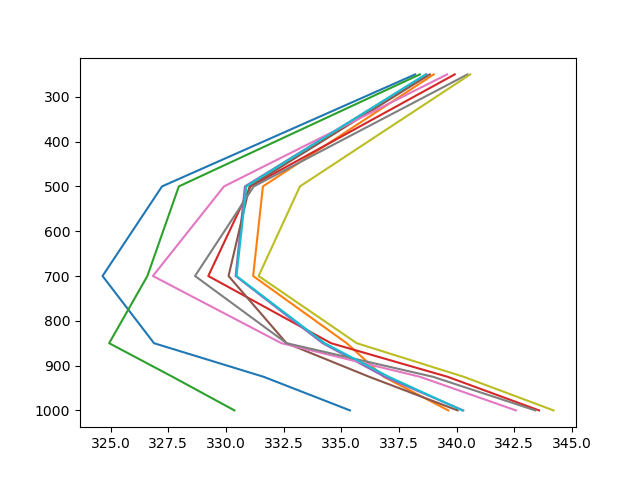

Week 1: Observational Evidence#
The zonal mean circulation#
The tropics and subtropics are typically defined as regions influenced by the Hadley circulation. However, this definition can be ambiguous and vary between individuals. Additionally, defining the boundary of the Hadley cell is a challenging and often unresolved issue.
To better understand tropical dynamics, it is essential to first identify the characteristics and components of the tropics. The figure below illustrates the long-term average zonal-mean radiative energy at the top of the atmosphere (TOA). It is evident that the outgoing long-wave radiation (OLR) is relatively flat compared to the incoming shortwave radiation at the TOA. OLR generally indicates the amount of energy radiated into space from the top of the atmosphere and can sometimes serve as a proxy for emission temperature.

Fig. 1 Outgoing long-wave radiation and incoming short-wave radiation at TOA.#
For example, higher clouds, such as those in the Intertropical Convergence Zone (ITCZ), emit less long-wave radiation (LW) into space due to their higher altitude and lower temperature. According to Planck’s Law, this results in a lower corresponding outgoing long-wave radiation (OLR). In regions with clear skies, the emission temperature represents the temperature of the free troposphere rather than the cloud tops, typically resulting in higher values. (Readers may also consider which atmospheric level’s temperature is defined as the emission temperature).
If we write down the energy equation,
Given that long-term temperature remains relatively stable (with greenhouse gas-induced temperature changes around the order of \(O(10^0)\), much smaller than seasonal cycles), the energy imbalance between long-wave (LW) and short-wave (SW) radiation suggests that circulation must redistribute energy from lower to higher latitudes.
Specifically, regions (e.g., tropics) with positive \(\mathrm{SW}-\mathrm{LW}\) values should exhibit column energy flux divergence, while regions with negative \(\mathrm{SW}-\mathrm{LW}\) values should show energy flux convergence. This implies net energy transport towards higher latitudes, accomplished either by atmospheric or oceanic circulation, through zonal mean or eddy circulation (topics covered in the chapters on Hadley Cell and Tropical Wave theories).
There are also interesting features (open questions) about zonal mean energy balance. If we mirror the meridional LW profile with respect to the equator, it appears quite symmetric, except for a slight shift in the ITCZ (a small local minimum near the tropics). This suggests that the boundary of the Hadley circulation is quite stable (assuming the cross-section between LW and SW represents the boundary). We will have more discussion in the week of Hadley cell.
Another interesting fact is that despite the surplus radiation in the tropics, there is net radiative cooling. This occurs because most of this radiative energy heats the surface (land or ocean), which then converts into evaporation or sensible heat, warming the atmosphere. In other words, SW radiation is nearly transparent to the atmosphere, except in regions with concentrated cloud droplets. Thus, radiative cooling and the vertical transport of latent/sensible energy play crucial roles in maintaining tropical energy balance. One evidence is that the strongest precipitation is located over the deep tropics while most other regions are dominated by the surface evaporation (i.e., net energy into the atmosphere).

Fig. 2 1979-2021 averaged precipitation and surface latent heat flux. The surface latent heat flux can be considered as a proxy of surface evaportation.#
While zonal mean gives us many elegant quantities in primitive equation, it definitely misses a lot of information. For example, Hadley is not necessary characterized by a zonal mean feature but a more localized pattern. In winter, its ascending branch is more located to the eastern Pacific. It is however, dominated by south Asia monsoon in boreal summer. More details will be provided in the week of “monsoon”.
Walker circulation and deviation from zonal Mean#
The redistribution of energy occurs not only in the meridional direction but also in the zonal direction. By examining a world map, a local maximum of moist static energy (defined as \(c_pT+gz+Lq\), the sum of potential and latent energy) can be identified in the Maritime Continent, a region characterized by the most active convection on Earth (indicated by negative velocity potential in this area).

Fig. 3 1979-2021 averaged 250-hPa moist static energy (K) and velocity potential.#
Unlike the Hadley cell’s meridional energy redistribution, the maximum moist static energy (MSE) over the Pacific warm pool transports energy to both the Eastern Pacific (cold tongue) and the Western Indian Ocean. This zonal-oriented overturning circulation is known as the Walker cell. The strength of the Walker cell is influenced by various factors. For example, on weather to intraseasonal timescales, tropical disturbances such as tropical waves and the Madden-Julian Oscillation contribute to its variability. On interannual timescales, tropical ocean variability, such as the El Niño Southern Oscillation, also affects the strength of the zonal overturning circulation.
It is worth noting that only the eddy component (deviation from the zonal mean) truly determines the strength of the Walker cell. The zonal mean circulation can only modulate the Walker cell through a few basin-wide air-sea coupling (e.g., cloud radiative feedback over the cold tongue or western boundary currents), and thus, it has limited influence on the Walker circulation in most cases.
Different from the influence of the zonal mean on the eddy component, how the eddy shapes the zonal mean climatology is more straightforward. For example, the intensity of the Hadley cell is strongly influenced by the strength of extratropical eddies. Additionally, tropical eddies, such as tropical waves or convection, can also affect the zonal mean climatology through MSE or eddy momentum flux. (details will be provided in various weeks of this course).
Note
While the decomposition of the zonal mean is convenient, it can create challenges when examining more intricate features. For instance, how does convection over the Maritime Continent influence South America? One might wonder if the local overturning circulation plays a more significant role. Indeed, this remains a topic of debate, and many new approaches have been proposed to address the limitations of the zonal-eddy decomposition (ref).
Another interesting feature is the weak temperature gradient over the tropics. The figure below shows a snapshot of tropical temperature, revealing that even on daily timescales, the weak temperature gradient is very robust. This feature can be quantified using the tropical geostrophic balance.

Fig. 4 500-hPa temperature (snapshot) on Jan 1st 1979.#
In the tropics, the following geostrophic balance is hold when the time scales of interest is longer than a certain period.
given the wind is around an order of \(O(10^0)\) and \(\beta y\sim O(10^{-5})\), one can easily find the characteristic length of “seeing” pressure gradient or temperature gradient is about \(O(10^{-5})\) (km). This is also the typical length scale to meet the geostrophic assumption in the tropics, which is insanely long! Thus, the weak Coriolis force in the tropics provides a strong dynamical constrain, which will lead to a few very interesting and powerful scaling law. These laws enable us to predict how the large-scale circulation (and even precipitation) will change in the future. We will cover more details in the later of this semester.
Tropical variability: convection, wave and moisture#
Convection#
Different from the zonal mean and time mean feature, “weather” and “variability” is mostly determined by eddy, which is usually characterized by both zoanl and meridional circulations. One reason is that there is no obvious zonal gradient of mean available potential energy as well as the angular momentum to maintain a balanced circulation (thermal wind) for the v component (i.e., meridional wind). These “eddies” (deviation from zonal mean) can be as large as a planetary wave or as small as a convective plume.
While they might be transient, they are still strongly constrainted by the weak temperature gradient climatology. For example, if we look at the tropical MSE profile, it’s almost identical everywhere in the free troposphere (\(\geq\)500-hPa) regardless where you get the profiles. This feature results from strong adjustment of gravity wave, which homogenizes the horizontal temperature gradient over the tropics.

Fig. 5 MSE profile from 10 randomly selected locations.#
With this strong constraint, a series of interesting frameworks are proposed to explain the tropical variability across scales (both space and time). For example, if we average the vertical profile shown in FIG5 as the \(\theta_{e,EQ}\) profile (reference profile), then any perturbation deviates from the reference profile will adjust back to it in a short period of time. Also, we know a saturate and strong convection can stay convective neutral (nearly constant MSE over different vertical levels) above the lifted condensation level (LCL), then both \(\theta_{e,s}\) and \(\theta_{e,\textrm{EQ}}\) are known variables. With a proper selection of convective adjustment time scales \(\tau\), we can easily calculate the convective latent heat release by the deep convective core. The is also the concept of a few cumulus parameterizations (i.e., Betts Miller Scheme).
A similar concept can also be applied to the climate change study. In the future climate, if one can predict the surface warming (not really complicated!), then the profile \(\theta_{e,s}\) is also a known variable given that the saturated specific humidity is also a function of temperature. Also assume the shape of the reference profile doesn’t change much (i.e., using the same profile as the current climate state). Then at a time equilibrium state, we can estimate how much latent energy due to climate change can be converted to potential energy (which is the temperature change!!) over different vertical levels (Paul O’Gorman and his team has some elegant theory for the future tropical climate). More details about the derivation of reference profile can be found in [LNK+22]
Waves#
Tropical waves have been extensively studied since the 1960s. Pioneers like Taro Matsuno, Adrian Gill, and Peter Webster explored the quasi-geostrophic wave solutions on either the equatorial beta plane or spherical coordinates. Their work relied on several key assumptions. Firstly, they assumed that tropical vertical motion is characterized by a single vertical structure, with divergence in the upper troposphere and convergence in the lower troposphere, indicative of deep convection. This assumption is supported by the weak temperature gradient, which causes energy redistribution within the tropics to occur more between different vertical levels than horizontally. Secondly, they assumed that the mean state remains relatively constant, with minimal time variation. With these assumptions, the horizontal and vertical solutions could be separated from the primitive equations, making the entire equation set solvable.
Despite the assumptions made, observations closely align with the theoretical solutions. Notably, Wheeler and Kiladis (1999) used satellite data to show that even when waves are convectively coupled, they still exhibit a (quasi) linear behavior in terms of their dispersion relationships. With the analytical solution in hand, many elegant quantity can be derived. e.g., how the vertical structure or vertical static stability determines the phase speed and group velocity of wave solution or how different waves are separated from each other according to scale-analysis in dispersion relationship.
We will delve deeper into this ongoing pursuit of understanding tropical wave solutions.
Similar to the tropical convection, tropical waves plays important role in shaping tropical climatology. For example, the fast propagation of gravity wave can efficiently homogenize the tropical temperature gradient, which makes weak temperature gradient a solid assumption. The deposit of wave momentum also plays important roles in determining the tropical angular momentum. For example, the Quasi-bieannial oscillation, an oscillation which characterizes latitudinal reversial in zonal wind (i.e., zonal-mean zonal wind) on a period of 28 months, is strongly influenced by gravity wave-induced momentum transport over the tropics. On the other hand, a slight change in mean flow also determines whether gravity waves can propagate through the mean flow barrier. This two way interaction forms a feedback loops and determines the observed tropical climatology.
Moistures#
Different from the tropical weak temperature gradient, the tropical moisture has significant moisture gradient. Such feature leads to development of many interesting theory, such as the moisture mode framework.
One reason that the moisture is relatively localized is that there is no strong dynamical control (i.e., fast adjustment) in horizontal direction for moisture. The dynamical control is mainly limited to the vertical direction due to the convective adjustment. SST and the moist entropy in the planetary boundary especially play the important role. On the other hand, the relatively shallow scale height of moisture (due to the dramatic decrease of temperature with height, i.e., the hydrostatic balance) indicates the control in moisture from the lower troposphere is more important than the upper troposphere. Tropical theories such as moisture mode, boundary layer entropy budget, and monsoon dynamics are strongly tied to these features of moisture.
Moisture is also the fuel of convection. From the observation, the tropical precipitation is a function of column water vapor (CWV). Cetain threshold should be satisfied for existence of deep convection. Interestingly, this threshold may vary over different climate states suggesting that it’s the value of CWV relative to its neighbor matters rather than the absolute value of CWV. More details will be provided in the later of this semester.
Á F Adames and D Kim. The MJO as a dispersive, convectively coupled moisture wave: theory and observations. J. Atmos. Sci., 2016.
Ángel F Adames and John M Wallace. Three-dimensional structure and evolution of the moisture field in the MJO. J. Atmos. Sci., 72(10):3733–3754, October 2015.
David S Battisti and Anthony C Hirst. Interannual variability in a tropical atmosphere–ocean model: influence of the basic state, ocean geometry and nonlinearity. J. Atmos. Sci., 46(12):1687–1712, June 1989.
J Bjerknes. Atmospheric teleconnections from the equatorial pacific1. Mon. Weather Rev., 97(3):163–172, March 1969.
James R Holton and Richard S Lindzen. An updated theory for the quasi-biennial cycle of the tropical stratosphere. J. Atmos. Sci., 29(6):1076–1080, September 1972.
Fei-Fei Jin. An equatorial ocean recharge paradigm for ENSO. part I: conceptual model. J. Atmos. Sci., 54(7):811–829, April 1997.
Yi-Xian Li, J David Neelin, Yi-Hung Kuo, Huang-Hsiung Hsu, and Jia-Yuh Yu. How close are leading tropical tropospheric temperature perturbations to those under convective quasi equilibrium? J. Atmos. Sci., 79(9):2307–2321, September 2022.
Richard S Lindzen and James R Holton. A theory of the quasi-biennial oscillation. J. Atmos. Sci., 25(6):1095–1107, November 1968.
Roland A Madden and Paul R Julian. Detection of a 40-50 day oscillation in the zonal wind in the tropical pacific. Journal of Atmospheric Sciences, 28:702–708, July 1971.
Taroh Matsuno. Quasi-geostrophic motions in the equatorial area. J. Meteorol. Soc. Japan, 44(1):25–43, 1966.
Julian P McCreary, Jr. A model of tropical ocean-atmosphere interaction. Mon. Weather Rev., 111(2):370–387, February 1983.
Mark J Rodwell and Brian J Hoskins. Monsoons and the dynamics of deserts. Quart. J. Roy. Meteor. Soc., 122(534):1385–1404, July 1996.
Stephen E Zebiak and Mark A Cane. A model el niñ–southern oscillation. Mon. Weather Rev., 115(10):2262–2278, October 1987.